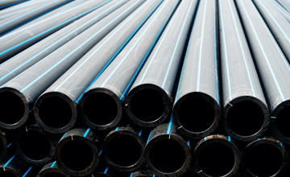
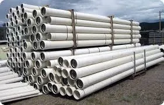
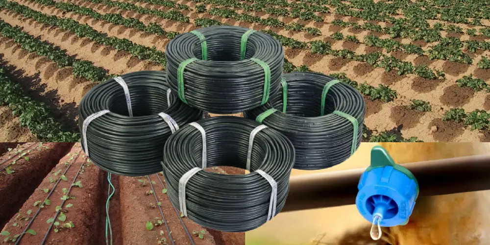
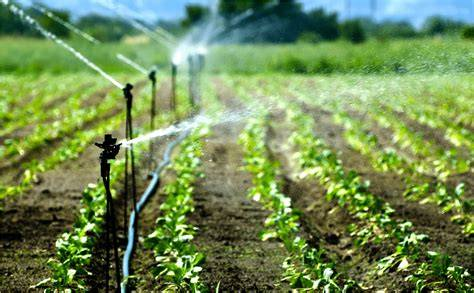

Explore Our Products
-

HDPE Pipes
Robust, flexible, and perfect for high-pressure water supply and irrigation systems.
-

PVC Pipes
Lightweight, corrosion-resistant, and ideal for plumbing, drainage, and agricultural use.
-

Drip Irrigation Pipes
Engineered for precision watering, saving water and boosting crop yields efficiently.
-

Sprinkler Pipes
Designed for even water distribution, ensuring lush fields and healthy crops.
-

Agriculture Pipeline Techniques
Innovative solutions for efficient water management in agricultural fields.
-

Pipe Polymers
Advanced polymer materials for durable and eco-friendly piping systems.